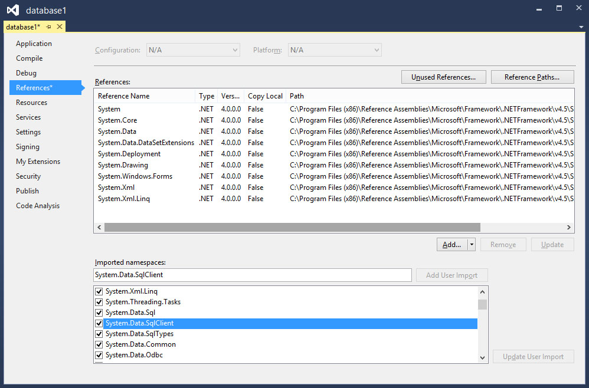

Visual Studio 2013 Lesson 33: Working with Databases- Introduction
[Lesson 32] << [Contents] >> [Lesson 34]
33.1 Introduction to Database in Visual Studio 2013
In our daily life, we deal with many types of information or data such as names, addresses, money, date, stock quotes, statistics and more. If you are in business or working as a professional, you have to handle even more data. For example, a doctor need to keep track of patients’ personal and medical information such as names, addresses, phone numbers as well as blood pressure readings, blood sugar readings,surgical history, medicines prescribed in the past and more. On the other hand, businesses usually have to manage large amount of data pertaining to products and customers. All these data need to be organized into a database for the ease of data management.
Database management systems are usually used in running payroll system, inventory system, accounting system, payment system, order handling system, customer relationship management system(CRM) and more. Some of the commercial database management system(DBMS) are Oracle, Microsoft SQL server and Microsoft Access
33.2 Creating a Database Application in Visual Basic 2012
A database management system typically deals with storing, modifying, and extracting information from a database. It can also add, edit and delete records from the database. However, a DBMS can be very difficult to handle by ordinary people or business men who have no technological backgrounds. Fortunately, we can create user friendly database applications to handle the aforementioned jobs with the DBMS running in the background. One of the best programs that can create such database application is none other than Visual Studio 2013 .
Visual Studio 2013 uses ADO.NET to handle databases. ADO.NET is Microsoft’s latest database technology which can works with many other advanced database management system such as Microsoft SQL server. In this lesson, we will develop codes that make use of Microsoft SQL Server 2012, therefore you need to have Microsoft SQL Server 2012 installed in your PC, you can download Microsoft SQL Server 2012 Express for free from http://www.microsoft.com/en-us/download/details.aspx?id=29062.
- SqlConnection– to connect to a data source in SQL Server
- DataTable -to store data for navigation and manipulation
- DataAdapter– to populate a DataReader
The aforementioned objects belongs to the System.Data and the System.Xml namespace. Therefore, we need to reference them in the beginning before we can work with them. To reference the ADO.NET object, choose project from the menu then select Database Project 1 properties to display the project properties. Next click the References tab to show the active references for the project, as shown in Figure 33.1
Figure 33.1
{kind=link}
Under imported namespaces, make sure system.data, System.Data.Sqlclient are selected, otherwise check them. Having done that you need to click the Save All button on the toolbar and then return to the Visual Studio 2013 IDE.
We shall proceed to create connection to the database source file in the next lesson.